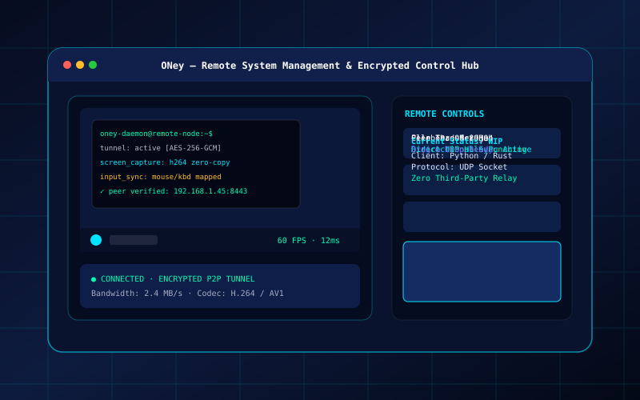

In Progress
Featured
DevOps
State
Active WIP
Tunneling
P2P Direct
Target Latency
< 20ms
DevOps / Remote Systems
ONey Remote System Control
Low-latency remote system management client with encrypted peer-to-peer UDP hole punching and zero-copy screen streaming.
Architecture Deep Dive: ONey
Designed for direct host-to-host encrypted remote management without third-party relays. Utilizes raw UDP sockets for low-latency frame transport, session key cryptography for host verification, and bidirectional input synchronization.
Challenge: Low-latency frame streaming across restrictive NAT firewalls.
Solution: Engineered lightweight UDP socket streaming with frame compression.